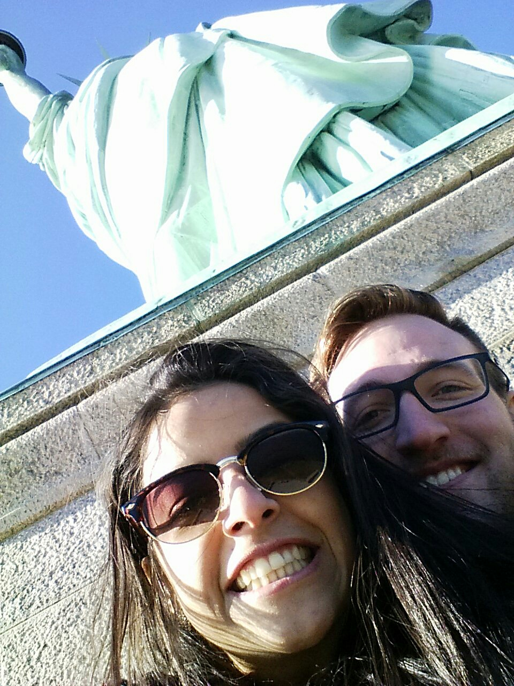
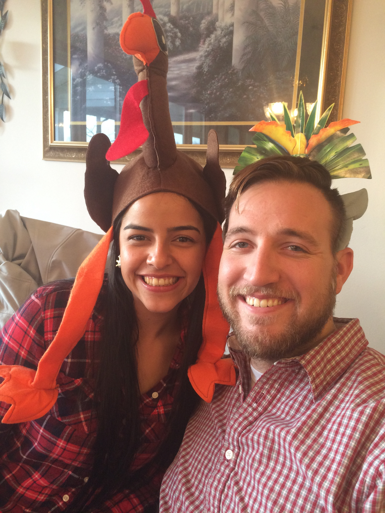
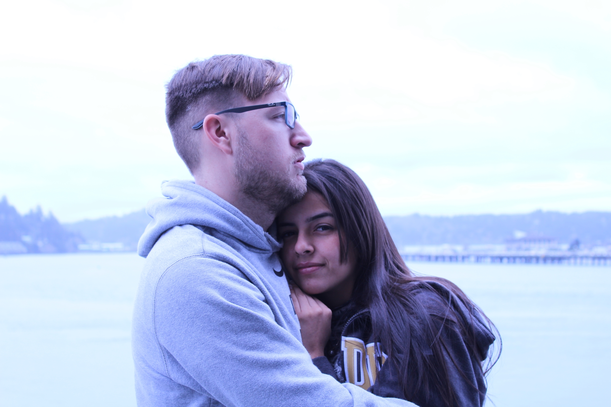
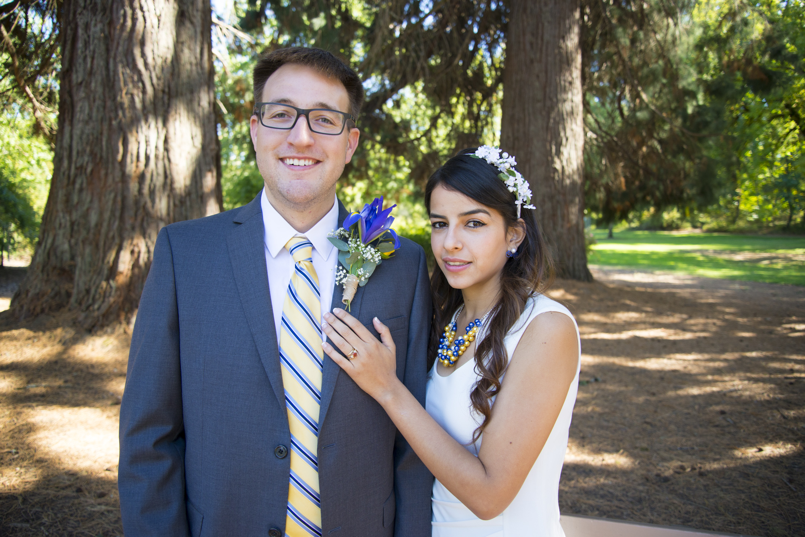

According to Luisa...
I met Mr. Spragg at Purdue University in the summer of 2015. He always has been so nice with me and made me feel super welcome in this country, and helped me to adapt to new culture, new habits, new academic topics, it was definitely new life.
I had a big crush on him, we were flirting since we met. I saw an interesting and handsome guy working in the lab, dancing reggeton and teaching me about concrete, I thought, I couldn’t be luckier to share in office, lab and research group parties with this guy. So, we started to date and share together. Everything was super intense and amazing.
We went to New York and we had so much fun, traveling and being alone together, enjoying each minute, discovering the world and our personalities, missing our flight home, being stuck in the subway for hours, and still having fun and laughing made us realize how much fun and perfect we were for each other.
We were so afraid, at least I was, because I knew I had to go back to Colombia, and endure a long-distance relationship, without knowing when we will see each other again. But What God wants together, will be together, despite distance and problems. We kept thinking to enjoy the present, and to not let the fears manage our relationship. So, there were adventures and surprises that made me so happy, like going to my first professional American football game, going to Washington D.C. I went to share with him and all the Spragg family for Thanksgiving. I was extremely nervous, you know, but it turned to be so nice because I was and I have been around an amazing family.
Later in December, we traveled together to Oregon, it was so nice to see different landscapes, and being together for so long made me be more and more in love each day. I went back to Colombia, it was so sad and I cried a lot. We kept in touch and called each other almost every day. I came here to Oregon in April, it was so wonderful seeing the spring, and it was raining like it almost always is in Corvallis.
Each time that I flew to Colombia was so sad, but also such a happy moment because I kept in my mind each good moment. Being far away from each other let us realize how much we wanted to be together. So, I came in the summer of 2016, when I finished my classes in Colombia, and we found that we didn’t want to be together just for the summer, that we wanted to be together forever. We briefly touched the topic, like each in love couple who sits to dream together. But one day we went to camping and in the top of South Sister mountain, August 13, 2016, he asked me: -Do you want to marry me? And gave me this beautiful ring, that look like it was from my dreams. Actually, it came from Oregon Sun Stone. I said: - YES! I couldn’t believe. It was a dream! We got our civil ceremony in September 2017, it was so beautiful, the day was so nice, and his eyes shined such much all the time and we were so happy.
Now, we don’t want you to miss when we say yes in front of the eyes of God, and get His blessing with the holy sacrament of matrimony at Newman Center. I love that place, my friends there, I mean my Oregonian family!
Each relationship has a story with ups and downs moment, but each moment makes each relationship so unique and special, where each person has a different perspective, and the summary of my perspective of our story is a story of love, perseverance, hope, joy and faith.
According to Robbie...
I met Luisa in June 2015. She was visiting Purdue and working with Professor Weiss. The first time I talked with her was during a friend’s master’s defense presentation. I drew a bird in my notebook and passed it to her. I asked her to guess the animal, and she guessed an elephant. I immediately liked her, and I thought she was funny and pretty cute. We worked together on few projects and around the lab together for a few weeks before I had the nerve to ask her to hang out outside of work. Our first date was to the Neon Cactus, which many Purdue people will tell you, is not the traditional place for a first date.
In October 2015, we made a trip to New York City. It was an opportunity to travel and see a part of the U.S. I had never seen. We officially began our relationship on the Statue of Liberty as we looked out across New York City. We had a fun trip, but had to come back eventually. The semester went by quickly, and before we I knew it the holidays had arrived. I enjoyed that we could spend the holidays together with my family, and I loved how easily Luisa became part of the family. In early 2016, Luisa helped me move to Corvallis, Oregon, so I could finish my PhD while working for Professor Weiss. Luisa and I enjoyed our drive across the United States, especially seeing our friends that were conveniently located along the way. Luisa was a good navigator, and I don't think we got lost once.
Luisa returned to Colombia in January 2016 where she finished her petroleum engineering degree with a few classes. A long distance relationship was difficult, but we enjoyed regular emails and video calls and whatsapp messages. I even got added to the family whatsapp group. Even though I sometimes have to use google translate for Tio Asdrubal's messages that are so long, and often have to rephrase my bad gringo espanol when I talk with Abuela, I feel that I have been welcomed into her family. Luisa was able to come to visit Oregon during Easter in 2016, and I was so happy to see her here. We spent that week traveling to all the sights around Corvallis, and my favorite was the beach in Newport. I was sad to send her back on the airplane, and I might have been a little teary eyed dropping her at the airport.
Luisa was able to come to visit for vacation in June 2016, and we had a lot of fun throughout the summer. We went camping with our friends, exploring the nearby Siuslaw National Forest, and enjoying the life in downtown Corvallis. Spending time with Luisa throughout the summer made me realize that she was the woman I wanted to spend the rest of my life with. I popped the question on nice day in August, at an elevation of 10,300 feet after hiking to the top of South Sister mountain. I brought Cameron (the best man) and Chunyu (one of the ushers) along to get some pictures. She didn't have any idea I would be asking her! Kelsea told me I needed to plan something super romantic for the day of the proposal, so that is where the idea for a six hour hike came from (thanks sis!). We finished that evening almost losing Chunyu in the wilderness, taking a bath in a glacially-fed lake, cooking steaks, and camping.
We were married at the Benton County courthouse in Corvallis, Oregon, on September 27, 2016. Now we are inviting friends and family to share with as we receive the Sacrament of Matrimony in the Catholic Church. I have been lucky to find a strong faith community here at St. Mary's in Corvallis, and I particularly enjoy the OSU campus ministry at the Newman Center. I am excited that we will be able to receive the Sacrament here at this community before we transition into the next stage of our lives, and I hope that you will be able to be here to celebrate with us.